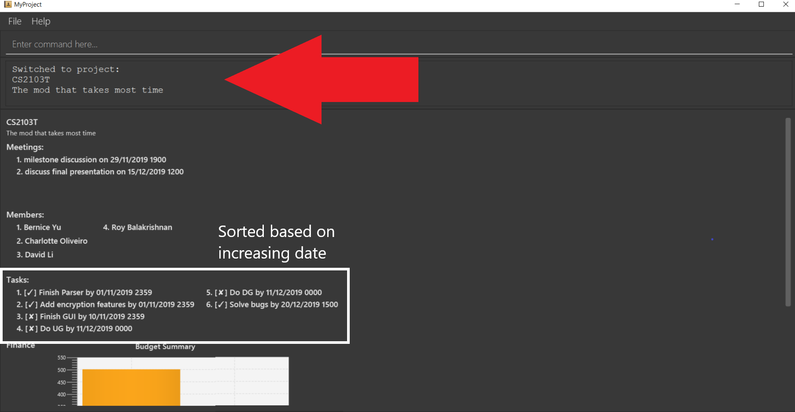
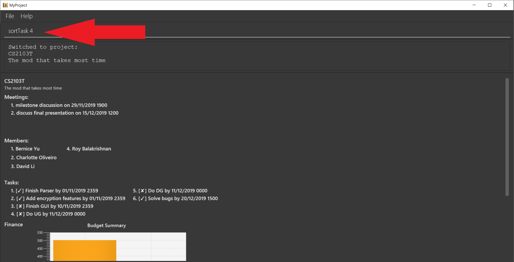
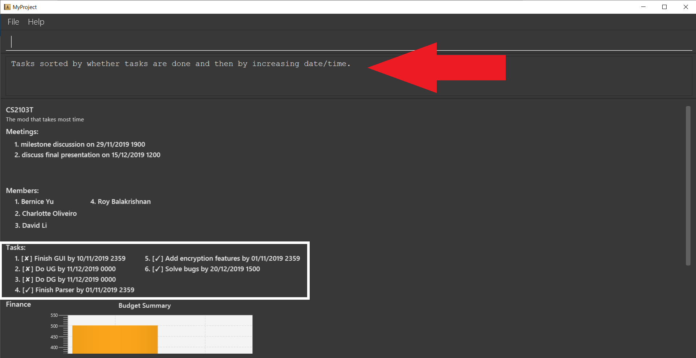
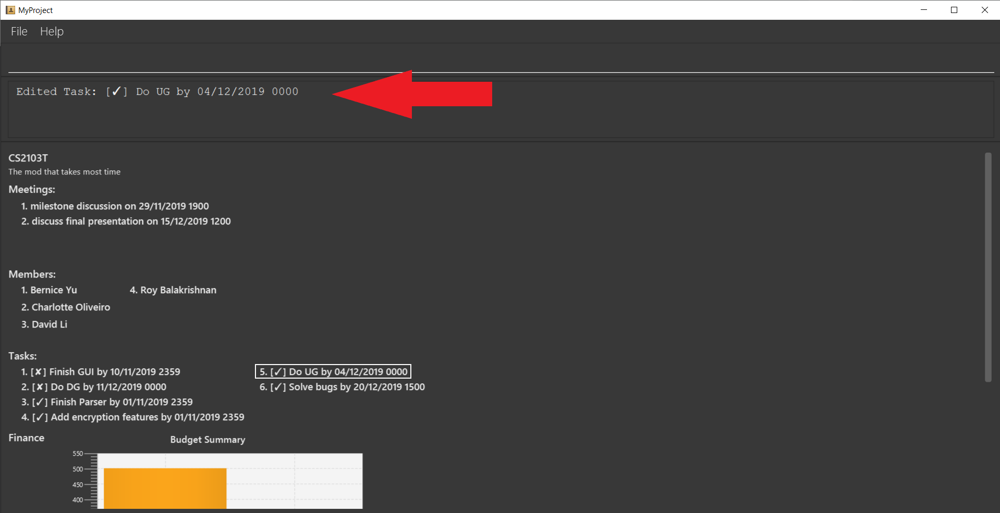

By: Team SE-EDU Since: Aug 2019 Licence: MIT
Team: T17-1
Content
1. Introduction:
MyProject (MP) is for team leaders who prefer to use a desktop app for managing their projects. MP is optimized for those who prefer to work with a Command Line Interface (CLI) while still having the benefits of a Graphical User Interface (GUI). With MP it is a one-stop app to store and manage your projects and their relevant information, this is especially useful if you are always managing multiple projects across different teams. MP has unique functions such as sending emails to members within the app and financial tracking capabilities etc. Currently our app is optimized for students to use but we intend to expand further to working adults as well.
Interested? Jump to the Section 2, “QuickStart” to get started. Enjoy!
2. Quick Start:
-
Ensure you have Java 11 or above installed in your Computer.
-
Download the latest myproject.jar here.
-
Copy the file to the folder you want to use as the home folder for your Address Book.
-
Type the command in the command box and press Enter to execute it. e.g. typing help and pressing Enter will open the help window.
-
Some example commands you can try:
-
list : lists all contacts
-
exit : exits the app
-
-
Refer to Section 3, “Features” for details of each command.
3. Features
3.1. Basic Commands
Here are some basic commands to start and navigate around the app.
3.1.1. Viewing help: help
Provides a url to this user guide for a more comprehensive list and explanation for each command.
Format: help
3.1.2. Checkout a project: checkout
Checkout a project to begin working on the project immediately.
Commands which require a project to be checked out first will be tagged using [Checkout].
Format: checkout INDEX
INDEX is the number used to identify the project in the project list.
Example:
-
checkout 1
3.1.3. Return to previous: back
If you want to return to the previous view page of the app, simply type the command back.
Format: back
Example:
-
checkout 1 -
back
| This command is used to return to the project list page after checking out to a project. |
3.1.4. Exiting the app: exit
Once you’re done with using the app, you can use this command to close the app.
Format: exit
3.2. Adding Items
This section deals with adding information to the application.
3.2.1. Add a project: addProject
Adds a new project into your list of projects.
Format: addProject n/PROJECT_TITLE s/PROJECT_DESCRIPTION
Example:
-
addProject n/CS2103 project s/Software engineering project
3.2.2. Add a person: add
Adds a person to your contacts.
When you add a person to your contacts, it will automatically change to displaying your list of contacts.
Format: add n/NAME p/PHONE_NUMBER e/EMAIL a/ADDRESS [t/TAG]…
| A person can have any number of tags (including 0) |
Examples:
-
add n/John Doe p/98765432 e/johnd@example.com a/John street, block 123, #01-01 -
add n/Betsy Crowe t/friend e/betsycrowe@example.com a/Newgate Prison p/1234567 t/criminal
Add a member to your project
Adding a member can be done in 2 ways, you can either add a new person to your contacts and to your current project, or you can simply add an existing person from your contacts to your current project.
1. Add a new member: addMember [Checkout]
This command is similar to adding a person to your contacts shown previously, except that you have to be
checked out into a project.
Format: addMember n/NAME [p/PHONE_NUMBER] [e/EMAIL] [a/address] [t/tag]…
| Adding a member only requires his/her name! |
However it will be good to add as much information as possible.
Example:
-
addMember n/John Doe a/John street, block 123, #01-01 -
addMember n/Betsy Crowe e/betsycrowe@example.com t/friend t/criminal
2. Add from your contacts: addFromContacts [Checkout]
This command helps to add a person you already saved in your contacts into your project, reducing the need
to type his information all over again. All you need to do is enter the index he is listed at.
Format: addFromContacts INDEX
INDEX is the number which the person is listed at, and it should be a positive integer eg. 1, 2, 3, ….
Example:
-
addFromContacts 1
3.2.3. Add a timetable: addTimetable
Need to keep track of your team members' schedule? Use this command to record down their timetable easily!
Timetable added can be used to generate avaiable meeting timeslots using the command generate
|
Format:
addTimetable INDEX [n/NUSMODS_SHARE_URL] [f/FILEPATH_TO_TIMETABLE]
Example:
-
addTimetable 3 f//home/john/Desktop/aliceTimetable.txt
Add Alice’s timetable to Alice, who has index 3 in the list of persons.
|
File should be formatted as a newline separated list of time ranges, e.g: MONDAY 1000 MONDAY 1200 MONDAY 1400 MONDAY 1600 TUESDAY 1100 TUESDAY 1500 |
-
addTimetable 2 n/https://nusmods.com/timetable/sem-1/share?CS2100=LAB:05,TUT:02,LEC:1&CS2101=&CS2103T=LEC:G13&CS2105=TUT:03,LEC:1&CS3241=TUT:05,LEC:1&CS3243=TUT:01,LEC:1&GEQ1000=TUT:D27
Add timetable to the person with index 2 on the list of persons, by retrieving timetable data from NUSMods.
Below is a step-by-step instruction to guide you through the process of adding a timetable to Alice, through the use of NUSMods:
-
Step 1: Type
addTimetable, followed by the index of the person you wish to add the timetable to, and the URL of the share link.
-
Step 2: Press enter, and you would see the following message. You can even scroll down to view a simple visualization of the timetable added!
addTimetable command success| Even if you accidentally entered a wrong URL, MyProject would prompt you helpfully! |
3.2.4. Add a task: addTask [Checkout]
Adds an unchecked task to the list of tasks of your current working project.
Format: addTask s/DESCRIPTION c/dd/MM/yyyy HHmm
Example:
-
addTask s/Finish GUI c/06/10/2019 1600
| Whenever you add a time with the prefix c/, the format should be dd/MM/yyyy HHmm e.g 10/12/2019 1600. MyProject will inform you if you attempt to add invalid days such as 30th February. |
3.2.5. Add a project meeting: addProjectMeeting [Checkout]
Adds a new project meeting to the current working project.
Format: Format: addProjectMeeting [c/ dd/MM/yyyy HHmm] [s/MEETING_DESCRIPTION]
Example:
-
addProjectMeeting c/29/09/2019 1900 s/milestone discussion
3.2.6. Add a budget [Checkout]
Add multiple budgets available to the current project.
Format: addBudget [b/NAME_OF_BUDGET AMOUNT NAME_OF_BUDGET AMOUNT…]
3.2.7. Add an expense [Checkout]
Whenever an expenditure is made under a budget, add it to record.
Format: addExpense [INDEX_OF_BUDGET] [s/DESCRIPTION] [ex/AMOUNT SPEND] [c/dd/MM/yyyy HHmm]
3.3. Editing
This section deals with editing information shown on the application.
3.3.1. Edit a person : edit
Edits an existing person in the address book.
Format: edit INDEX [n/NAME] [p/PHONE] [e/EMAIL] [a/ADDRESS] [t/TAG]…
Examples:
-
edit 1 p/91234567 e/johndoe@example.com
Edits the phone number and email address of the 1st person to be91234567andjohndoe@example.comrespectively. -
edit 2 n/Betsy Crower t/
Edits the name of the 2nd person to beBetsy Crowerand clears all existing tags.
3.3.2. Edit a task : editTask [Checkout]
Edits an existing task in the task list of the current project.
Format: editTask INDEX [s/DESCRIPTION] [c/dd/MM/yyyy HHmm] [d/]
Examples:
-
editTask 1 c/05/05/2019 1600 d/
Edits the date and time to05/05/2019 1600and checks the task. -
editTask 2
Unchecks the task.
3.4. Deleting
This section deals with removing information within the application.
3.4.1. Deleting a person: delete
Deletes the specified person from your contacts.
Format: delete INDEX
Examples:
-
list
delete 2
Deletes the 2nd person in the address book. -
find Betsy
delete 1
Deletes the 1st person in the results of thefindcommand.
3.4.2. Remove a member: removeMember [Checkout]
Removes the specified person from the current working project.
Format: removeMember NAME
NAME refers to the full name of the member displayed in the project.
Example:
-
removeMember John Doe
3.4.3. Delete a task: deleteTask [Checkout]
Deletes the specified task from the current working project.
Format: deleteTask INDEX
INDEX is the number used to identify this task in the task list.
Example:
-
deleteTask 1
3.4.4. Delete a meeting: deleteMeeting [Checkout]
Deletes the specified meeting from the current working project.
Format: deleteMeeting INDEX
INDEX is the number used to identify this meeting in the meeting list.
Example:
-
deleteMeeting 1
3.5. Listing Information
3.5.1. List your contacts: list
Shows you the list of contacts you have currently along with their respective information.
Format: list
3.5.2. List your budgets: listBudget [Checkout]
See the summary of all budget which shows how much money is left with that budget and where is this budget used.
Format: listBudget
3.6. Finding
3.6.1. Find a person by name: find
Finds persons whose names contain any of the given keywords.
Format: find KEYWORD [MORE_KEYWORDS]
Examples:
-
find John
ReturnsjohnandJohn Doe -
find Betsy Tim John
Returns any person having namesBetsy,Tim, orJohn
3.7. Meeting
For every project, you can add meetings to it, and below you will be able to find more useful commands associated with this functionality.
3.7.1. Generate meeting timing: generate [Checkout]
Need to decide on a meeting timing, but having trouble finding a time where all members are free? This command can help suggest meeting timings!
-
Prerequisite: Timetables have been assigned to the members with the command
addTimetable
generate would not give an error if some members do not have timetable assigned to them. Ensure that you have done addTimetable for each of the members in the project before using generate.
|
Format: generate d/DURATION [r/TIMERANGE]
Example:
-
generate d/2 r/MONDAY 0900 MONDAY 1800
Generates all possible meeting timeslots that lasts at least 2 hours, within the time frame of Monday 9am to Monday 6pm.
Below is a step-by-step instruction to guide you through generating a meeting timeslot that lasts for 2 hours, between Monday 1000 to Monday 1800:
-
Step 1: To generate a meeting timing for a project, you first need to
checkoutthat project.
-
Step 2: Enter the command with your desired duration of the meeting, and the time range to generate within
generate command-
Step 3: Press enter, and you will see the following result:
| If MyProject is unable to find a timeslot where all members are free, it would try to find another timeslot where most members are free |
3.8. Email
Tired of switching between applications? We got you covered, below you will find some commands which support sending emails right here within the application.
| Do keep in mind that only the user Account in our current version is only compatible with Gmail Account and please ensure that the Access to less secure app in the security setting is enabled before signing in! |
3.8.1. Sign in to your account: signIn
Signs in to the your email account.
Format: signIn ac/ACCOUNT_EMAIL_ADDRESS pa/PASSWORD
Example:
-
signIn ac/example@gmail.com pa/12345678
|
This command is required to be executed before the remainder of the email commands can be executed. The correctness of the email address used and the password will be checked. |
3.8.2. Log out from your account: logOut
Logs out from your email account.
Format: logOut
Example:
-
logOut
3.8.3. Send an email: sendMail
Sends an email to the specified person in your contacts.
Format: sendMail r/RECIPIENT_OF_EMAIL su/SUBJECT me/MESSAGE_BODY
Example:
-
sendMail r/example@gmail.com su/Test me/HelloWorld!
| We will not check the correctness of the member’s email address |
3.8.4. Broadcast an email: broadcastMail [Checkout]
Sends an email to all members in the current working project.
Format: broadcastMail su/SUBJECT me/MESSAGE_BODY
Example:
-
broadcastMail su/CS2103T me/added new Task
| We will not check the correctness of the members' email address |
3.8.5. Send reminder: sendReminder [Checkout]
Sends a reminder to all members from the current working project of the upcoming Meeting and Task that is due.
Format: `sendReminder`d/DURATION
DURATION is the number of days from the current time within which the Tasks are due and The Meetings are held.
Example:
-
sendReminder d/3
| We will not check the correctness of the members' email address |
3.9. Sorting
The following section provides a set of commands which help with sorting the information inside the application. MyProject makes it very easy and user-friendly by making all sort commands follow the same format and index/order pairing as shown below!
| The default sorting order for the following lists is by increasing order of time(index 2). Whenever MyProject is closed, the ordering will return to the default order. |
3.9.1. Sort tasks: sortTask [Checkout]
This command sorts the tasks in the task list of the current working project.
Format: sortTask INDEX
INDEX refers to the index of the list provided in the highlighted section above which corresponds to the type of sorting you wish to apply.
For example, index 1 corresponds to sorting by alphabetical order. For the case of sorting tasks, only numbers between 1 and 4 are applicable.
Example:
Let’s say you have added many different tasks with different deadlines and progresses into MyProject.
The default sorting order that MyProject offers is by increasing order of time(index 2). However you wish to group those tasks that are done in one group and those not done in another group and
then further sort each group by increasing order of time(index 4) to track the progress of your tasks.
Simply type in the command sortTask 4 and all the tasks in the list will immediately be sorted accordingly.
In addition, whenever you add a new task(Section 3.2.4) or edit the details of an existing task(Section 3.3.2), MyProject will automatically insert
the newly added or edited task into the correct position based on this new sorting order so you don’t have to continuously type this command whenever
you wish to add or edit tasks!
Here is a step by step process on how to do this.
-
Firstly, since this command is labeled with [Checkout] at the start, ensure that you
checkoutto a project first. Notice how the tasks in the task list are currently at the default sorting order which is by increasing order of time.  -
Next, enter the command
sortTask 4into the command line and press enter. You can choose any index from 1-4 depending on which type of sorting order you wish to sort by based on the specifications provided in the highlighted section above.  -
The following success message will be displayed if the input was entered correctly. Check that the type of sorting displayed in the success message is the one you actually wanted.
The tasks in the task list will then be immediately sorted accordingly as shown in the white box.  -
Now let’s say the deadline for task 2(Do UG) is pushed forward by a week and you’ve just completed it. Type in the command
editTask 2 d/ c/04/12/2019 0000(check out section 3.3.2 for more details on the editTask command) into the command line and press enter.
The task will be edited accordingly and immediately be sorted into the correct position as shown below. 
3.9.2. Sort spending: sortSpending [Checkout]
Sorts the spending in the budget list of the current working project based on given specification. The implementation is
slightly different from sortTask. MyProject will not show you the list of spending immediately after entering
the command sortSpending. Enter the command listBudget to view the newly sorted list of spending.
Format: sortSpending INDEX
INDEX refers to which type of sorting you want to do. In this case, only integers 1, 2 and 5 are applicable.(Refer to the highlighted section above)
Example:
-
sortSpending 5(Sorts the spending by increasing prices)
3.9.3. Sort meeting: sortMeeting [Checkout]
Sorts the meetings in the meeting list of the current working project based on given specification. The implementation is
exactly the same as sortTask. Refer to the sortTask section for a more detailed explanation.
Format: sortMeeting INDEX
INDEX refers to which type of sorting you want to do. In this case, only integers 1 and 2 are applicable.(Refer to the highlighted section above)
Example:
-
sortMeeting 1(Sorts the meetings by alphabetical order)